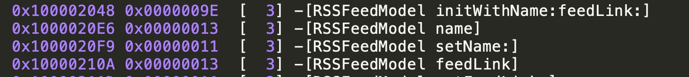

学习自 深入剖析iOS编译
编译后生成的二进制内容 Link Map File
在build Setting里设置Write Link Map File为Yes后，每次编译都会在指定目录生成这样一个文件。文件内容包含了Object files，Sections，Symbols
Object files
这部分内容都是.m编译后的.o和需要link的.a文件。前面是文件编号，后面是文件路径
[ 2] /Users/fish/Library/Developer/Xcode/DerivedData/RSSReader-dguiqpuhzqvuwbewcrithsiyuewj/Build/Intermediates.noindex/RSSReader.build/Debug-iphonesimulator/RSSReader.build/Objects-normal/x86_64/UIView+Extension.o
...
...
...
[160] /Users/fish/Library/Developer/Xcode/DerivedData/RSSReader-dguiqpuhzqvuwbewcrithsiyuewj/Build/Products/Debug-iphonesimulator/libPods-RSSReader.a(Pods-RSSReader-dummy.o)
Sections
描述每个Section在可执行文件中的位置和大小。每个Section的Segment类型分为__TEXT代码段和__DATA数据段两种

.data数据段里面保存的都是初始化过的全局静态变量和局部静态变量。.rodata段存放的是只读数据，一般都是const修饰的变量和字符串常量。.bss段存放的是未初始化的全局变量和局部静态变量。代码段就在.text段。
Symbols
symbols对Sections进行了再划分。这里会描述所有的method、ivar和字符串，以及对应的地址、大小、文件编号信息等


每次编译后生成的dSYM文件
在每次编译后都会生成dSYM文件，程序在执行中通过地址来调用方法函数，而dSYM文件里存储了函数地址映射，这样调用栈里的地址可以通过dSYM这个映射表获取具体函数的位置。常用来处理crash时获取到的调用栈.crash文件，将其符号化
可以通过 Xcode 进行符号化，将 .crash 文件，.dSYM 和 .app 文件放到同一个目录下，打开 Xcode 的 Window 菜单下的 organizer，再点击 Device tab，最后选中左边的 Device Logs。选择 import 将 .crash 文件导入就可以看到 crash 的详细 log 了。
还可以通过命令行工具 symbolicatecrash 来手动符号化 crash log。同样先将 .crash 文件，.dSYM 和 .app 文件放到同一个目录下，然后输入下面的命令
export DEVELOPER_DIR=/Applications/Xcode.app/Contents/Developer
symbolicatecrash appName.crash appName.app > appName.log
debug环境默认不生成dsym文件，release环境才会生成